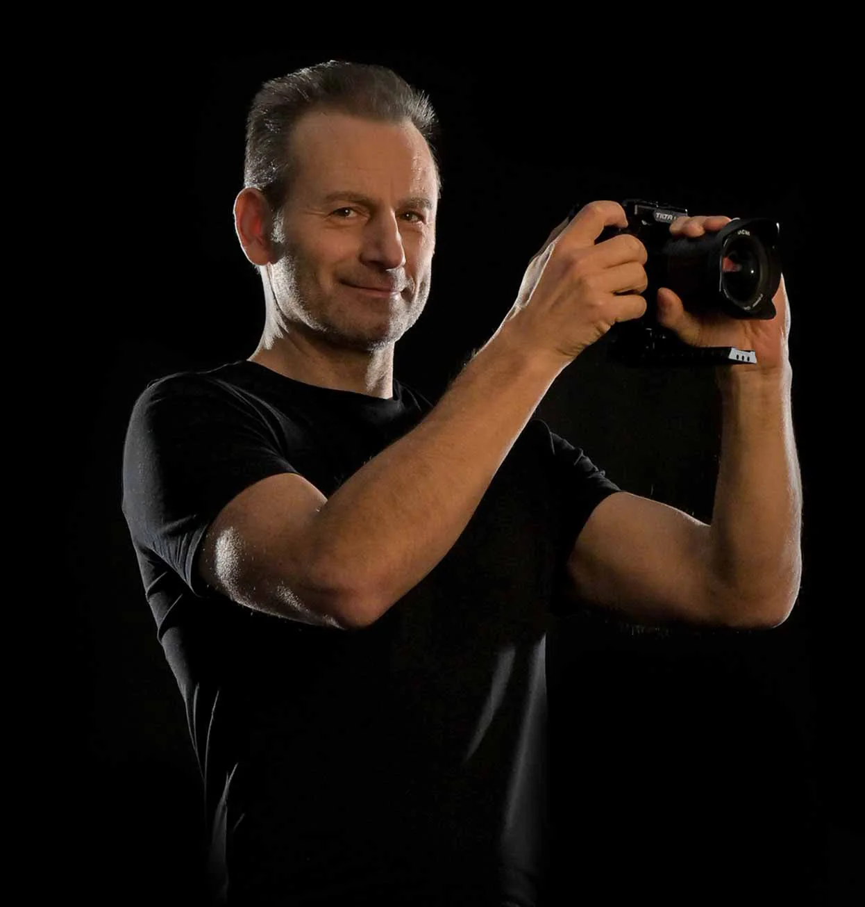
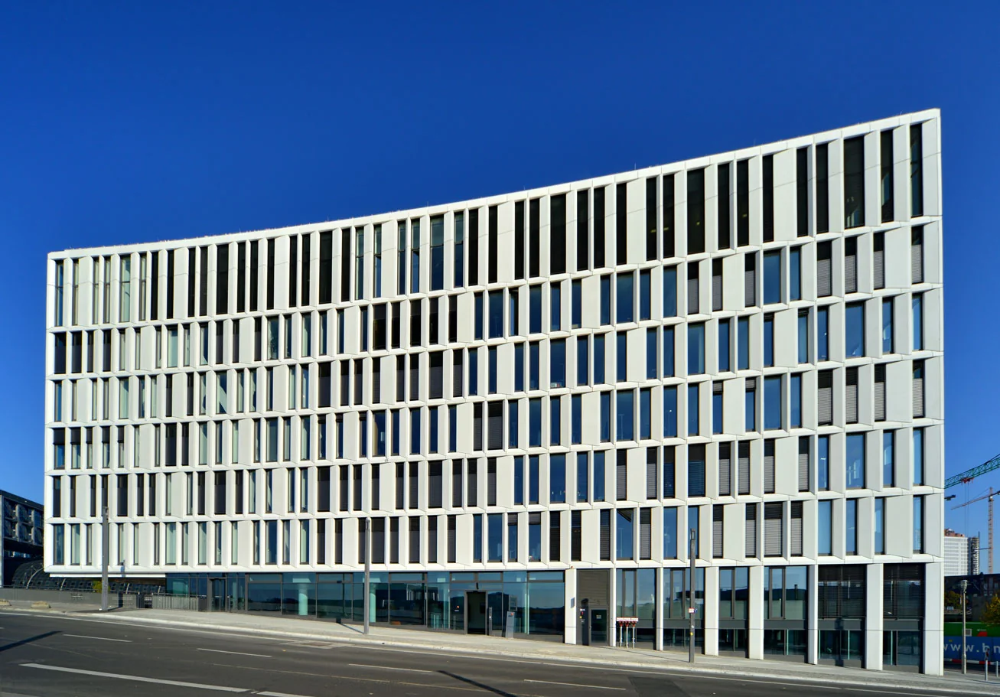
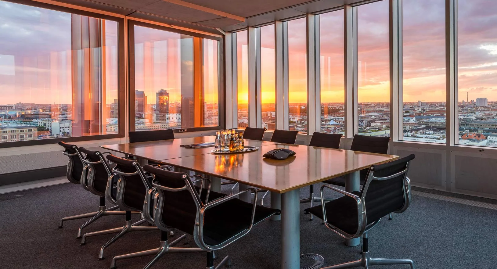
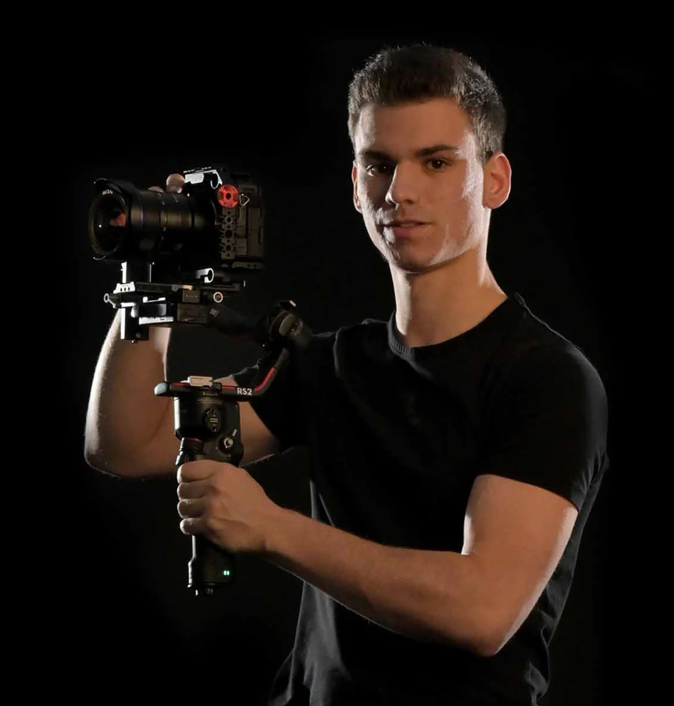

Andreas Nenninger
Fotografie · Drohne · Helikopter

PHOTO · FILM · 360 · BERLIN
Wir machen Immobilien erlebbar.
Mit Fotografie, Film und virtuellen Rundgängen.
WE MAKE YOUR ESTATE A STAR
ENTDECKEN01 / FOTOGRAFIE
Vom Detail bis zur Skyline.
Architektur in ihrer ganzen Vielfalt.
Vom Boden, mit der Drohne und aus dem Helikopter.
02 / FILM
Perspektiven, die bewegen.
Räume, Lage und Atmosphäre in Bewegung.
Immobilienfilme für Office, Logistik und Wohnen.
03 / VIRTUELLE TOUREN
Ein neuer Blick auf Raum.
Immobilien online besichtigen. Perspektiven selbst wählen. Zusammenhänge verstehen – schon vor dem ersten Termin vor Ort.
3D-Scans · Virtuelle Rundgänge · Matterport
Der interaktive Rundgang lädt erst nach Ihrem Klick von Matterport oder MPskin.
04 / DIGITAL LAB
Von der Aufnahme zur Vision.
Digital Staging, virtuelle Renovierung und 3D-Visualisierung: Wir machen Ideen für Immobilien sichtbar.
05 / KI STUDIO
NEU · LEISTUNGSENTWURFNeue Möglichkeiten für Ihre Vermarktung. Mit KI entwickelt, mit gestalterischem Blick ausgearbeitet.

ORIGINALAUFNAHME · MÖGLICHES AUSGANGSMATERIALKI HOME STAGING
Virtuelle Einrichtung mit einem stimmigen Stil. Geplant als kuratierte Bildserie mit Originalvergleich – für Exposé, Website und Präsentation.
Projektidee besprechen06 / DAS STUDIO
Berlin. International im Einsatz.
Immobilienverständnis trifft Bildgestaltung.
Von einzelnen Liegenschaften bis zu großen Portfolios.

Fotografie · Drohne · Helikopter

Film · Schnitt · Postproduktion
Produktionsplanung · Studio Office
Web · Digitale Exposés
07 / KONTAKT
Ihre Immobilie. Unser nächstes Projekt.
Ein Objekt. Ein Portfolio. Eine neue Idee.
Erzählen Sie uns, was Sie vorhaben.
Für einen guten Start:
Objekt & StandortGewünschte LeistungZeitraum